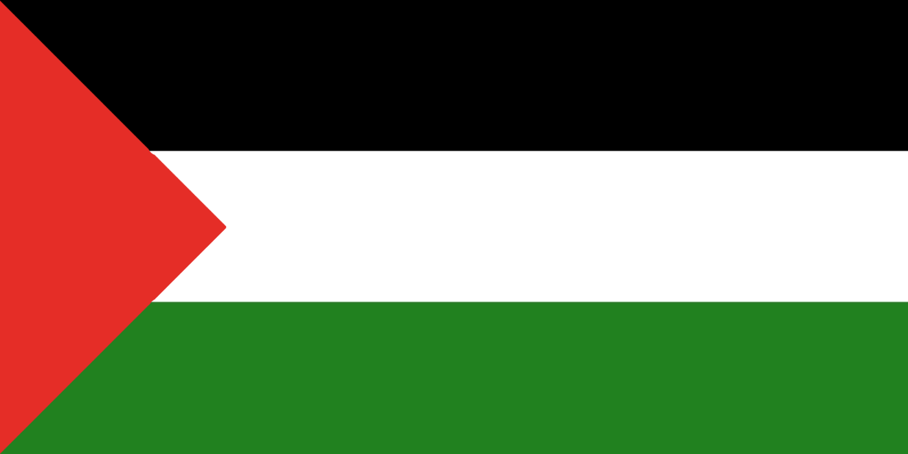

January
January
January
January
“Games Done Quick” is a semi-annual charity marathon where speedrunners compete to see who can beat various games the fastest encouraging viewers on Twitch to donate while watching.
SupportFebruary
February
February
February
The fund would provide aid in supplying food, water, shelter, and medical supplies to those affected by the earthquake.
SupportMarch
March
March
March
The Immune Deficiency Foundation supports those with primary immunodeficiencies by raising awareness, supporting those with PI, aiding research, and advocating for public policy programs.
SupportApril
April
April
April
The event hosted 12 fights featuring 24 popular creators in the ring such as Alex Wasabi, Idubbz, Marisha Ray, Michelle Khare, and Ethan Nestor took to the ring. The event also featured hosts and commentators such as popular YouTubers Mark Fischbach, Sean Mcloughlin and more
May
May
May
May
St Judes PLAY LIVE is an annual month-long charity event that kicked off once again to partner with streamers across Twitch. Thanks to streamers like Kayla Sims (Lilsimsie) her community helped raise $500,000 hitting her stream goal. The event raised 2.4 million for the St Judes Research Hospital helping kids with cancer find cures and not pay a dime.
Doctors Without Borders aims to provide medical care in more than 75 countries around the world.
SupportJune
June
June
June
The event invited friends and fellow Minecraft streamers to play against each other for the One of Us Global Foundation was made with techno Dad and the Sarcoma Foundation in memory of popular YouTuber and streamer Technoblade to help empower young people through scholarships mentorships and more.
SupportThe event featured 38 content creators such as Valkyrae, Lily Pichu, Karl Jacobs, Ironmouse, and more who all contributed to the auction pool where viewers and streamers in person and online could bid and donate to the IDF
September
September
September
September
Featuring 34 content creators such as KSI, Mr.Beast, Karl Jacobs, Jacksepticeye, and more played against each other bringing around 60,000 people to the London Stadium.
SupportOctober
October
October
October
The event hosted streamers in forest-themed fashion, a show and tell of items streamers brought for the online auction, and a streamer date auction where other streamers could bid on a “date” where all proceeds were split to the various charities
Hasan Piker a known political commentator on Twitch has raised 1.1 million since October 14th for Palestinian medical assistance between The Palestine Children’s Relief Fund, American Near East Refugee Aid, Medical Aid for Palestinians, and the Palestinian Red Crescent Society he will continue to stream and speak up to support Palestine.
 SupportDecember
December
December
December
The live event will be taking place December 2nd at the Orpheum Theater in Los Angeles with special guests Ethan Nestor and Sykkuno.
For the second year thankmas will be raising money for the World Central Kitchen who aides millions globally by providing fresh meals to those in humanitarian and natural disasters